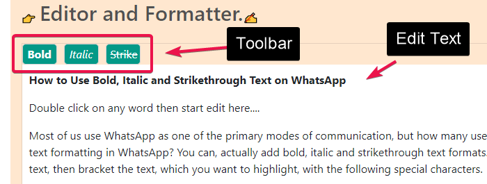
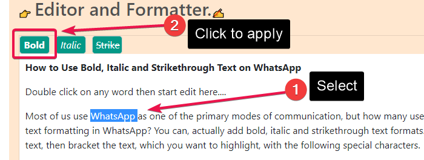
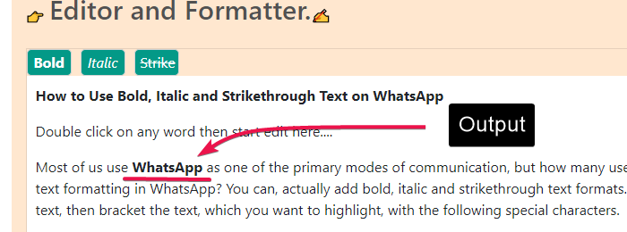
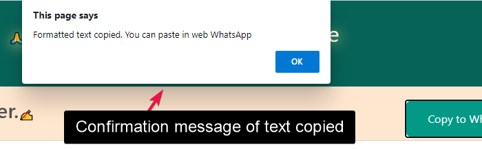
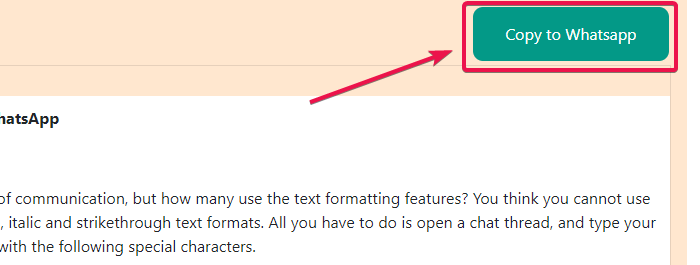
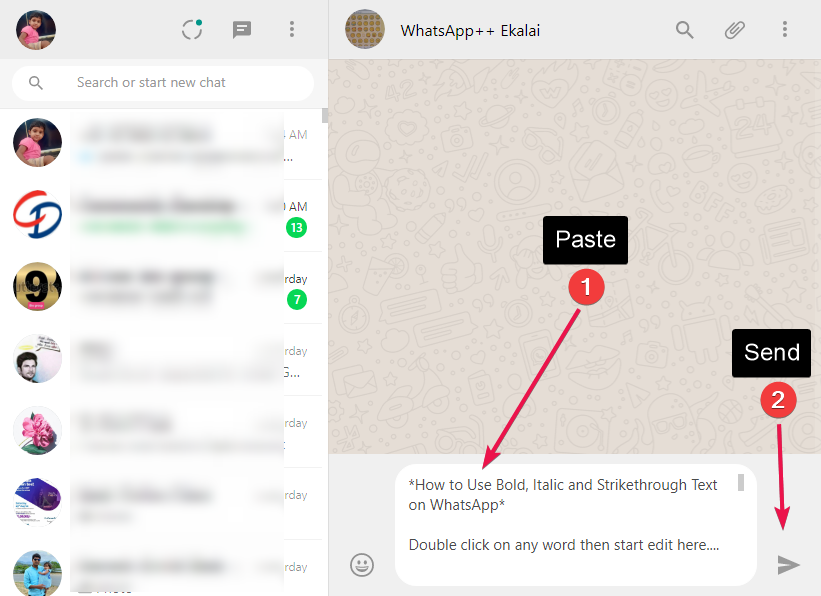
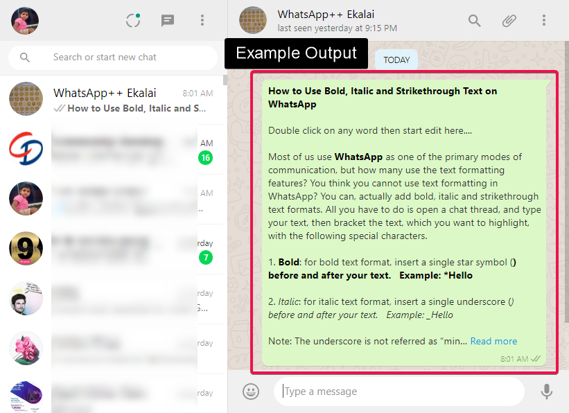

👉 Editor and Formatter.✍
👉 HTML Text Preview. 👇
👉 Whatsapp Text Preview. 👇
How to use the editor and formatter?
😲 First of it beginning stage alpha editor, it's have lot of buggy, So use carefully!...
😕 Before your start edit, copy text any where in your system then paste the notepad, After copy text from notepad then paste in this editor. Otherwise it make trouble.
🥶 You can prepare content for Whatsapp messaging with different formatting style
options like bold, italic, strike through or mixed format.
😭 Some basic instruction the following steps to format your message.
🧡 Step 1
Type your content or copy paste text from notepad, otherwise it not work correctly.
💛 Step 2
Select the text you want to format. example after selecting the text click "Bold" for making bold in the toolbar
💚 Step 3
You can see your formatted content.
💙 Step 4
Alert dialog indicate to formated text copied to clipboard.
💜 Step 5
After all your fortmat is done then click "Copy to Whatsapp" button
🖤 Step 6
Formatted text paste in your web Whatsapp
💗 Step 7
WhatsApp message sent output.
🔗 Reference
 Source Code Download from Github
Source Code Download from Github
 pell is the simplest and smallest WYSIWYG text editor for web, with no dependencies
pell is the simplest and smallest WYSIWYG text editor for web, with no dependencies